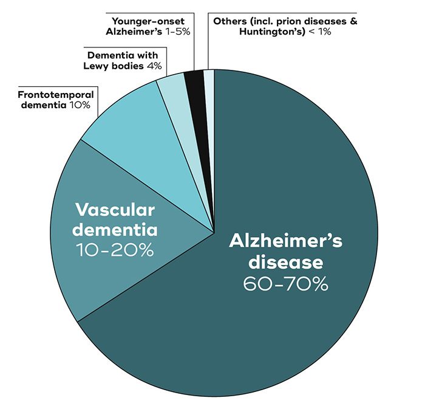
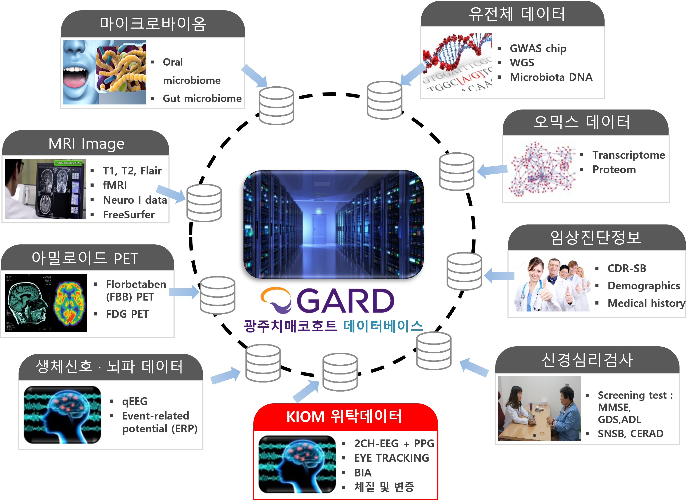

다중 생체신호를 활용한 인지 저하 상태 예측 알고리즘 개발
The Development of a Cognitive Decline Prediction Algorithm Using Multimodal Biosignals
![]()
Digital Health Research Division
Korea Institute of Oriental Medicine
대한민국 정부출연 연구기관 조직

KIOM 조직·인력 구성

연구인력 구성 현황 및 연구 인프라

중점 기술 확보 비전

융합형 기초·원천 연구
경혈 경락 원리 규명을 통한 뇌질환(치매, 파킨슨 등) 극복 원천기술 확보

한약(韓藥)의 미래가치 창출
차세대 치료기술 및 미래자원 연구를 통해 미래 난제 해결 기여

Background
치매(Dementia)
후천적으로 발생하는 정상적 노화의 범위를 벗어난 뇌인지 기능 저하로 정상적인 일상 생활을 유지하지 못하는 상태
다양한 병인이 존재하지만 알츠하이머병(Alzheimer’s disease, AD)에 기인한 치매가 가장 일반적임(전체 케이스 중 60-70%)


Background
AD Continuum
- AD로 인한 인지기능 저하는 오랜 시간에 걸쳐 매우 느리게 진행
- 증상진행을 완화하고 삶의 질 유지를 위한 AD 조기 진단은 매우 중요

Background
AD 선별 및 진단 방법

Motivation
AD 조기 선별을 위한 비침습적이고 비용 효율적인 방법의 필요성
생체신호의 높은 개인 변동성을 보상할만한 기존 임상 검사 도구 활용
\(\rightarrow\) 치매 조기예측을 위한 미세 생체신호 기반 한·양방 융합 기술 개발 과제 시작(2018 - 2024)
Eye Tracking (안구추적 장치)
눈 움직임을 카메라로 관찰해 어디를 보고 있는지를 추적

예비 연구 (2017-2018)
연구 결과 1

KIOM-조선대 공동 연구(2019-2024)
Gwangju Alzheimer’s Related Dementia (GARD) Cohort
2014년부터 현재까지 광주 지역 고령 인구 대상 데이터 수집
체액 바이오마커, MRI, PET, 신경심리검사(SNSB) 등 다양한 데이터 확보
2022년 기준 15,136명 이상의 데이터 확보


KIOM-조선대 공동 연구(2019-2024)
안구추적 신호 특징의 MCI 예측 가능성 탐색

KIOM-조선대 공동 연구(2019-2024)
연구 결과 3

통합 예측모형 개발 및 평가
Scheme

- Regressors [생체나이, SNSB II 뇌기능 점수(주의/집중, 전두엽 기능, 기억, 언어, 시공간 지각 기능)] 및 classifier (인지저하상태 예측 모형)에 대해 calibration 적용
- SNSB II 뇌기능 예측 점수에 대한 레이더 도표 표현
- Regressor의 예측값에 대한 불확도를 나타내기 위한 90% conformal interval 추정
- R Tidymodel 패키지를 활용한 파이프라인 자동화 구축
시각화 어플리케이션 설계
Design
JavaScript 기반으로 구현
사용자가 K-MMSE, EEG, Eye-tracking, BIA 검사 및 측정 완료를 전제함.
특징 업로드 시 서버 디렉토리에 저장 및 데이터베이스 적재
데이터베이스와 R 언어 연동을 통해 모형 예측에 필요한 전처리 과정 수행 및 예측모형 결과 도출 후 DB에 적재
DB로부터 예측결과와 주요 특징 지표를 추출해 웹페이지에 시각화

시각화 어플리케이션
https://dementia.inno-t.shop/